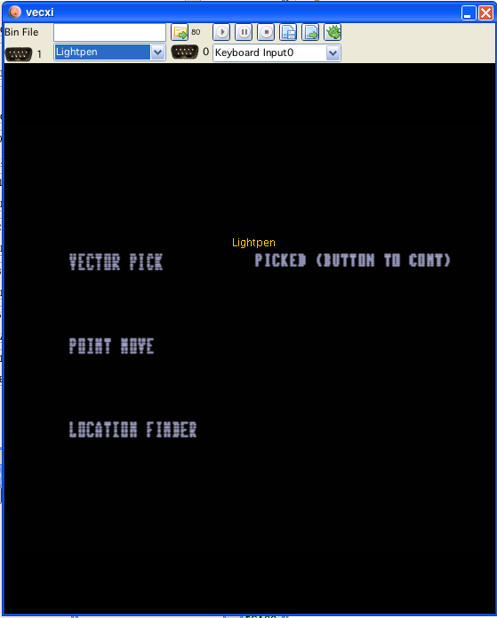
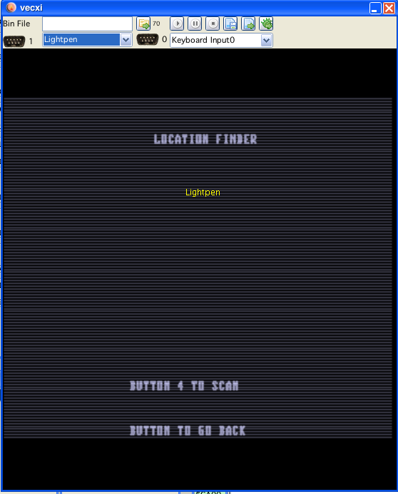

Lightpen example 2
For the lightpen no "Code Generation" was done, since any generated code would have been an extensive example on its own.
Instead I provide an example in form of a "code snippet" within codi. (see:
codelib/Snippets/Malban/Lightpen/LightpenExample.asm
and
codelib/Snippets/Malban/Lightpen/LightpenSubroutines.i)
Much of the example is reused code found in the Artmaster binary and the great disassembly of Fred Taft.
I enhanced his disassembly in two ways:
added further comments
extracted a couple of subroutines, which can be used "out of the box" without sorting out to much stuff
Anyone interested in programming lighpen stuff should find it (I hope) to be quite easy to get going.
I didn't bother to provide examples for lightpen usage in port 0, I can't really seem to find much use for it, although the routines in general should be nearly the same. Further writings about lightpen in this documentation always assumes lightpen in port 1.
The main (and actually - ONLY) communication that is going on between the lightpen and a vectrex is by whether "button 4" of joyport 1 is pressed or not. The lightpen internally reacts (how else could it be) on light. If the light is switched on the button is active (I say active here, in reality the state of the button goes low, but that is sort of confusing, lets just say light = active), if the light is switched off - the button is not active. The switching is done "lightning" fast. If you use your usual vectrex 50Hz display, the button is switched on/off 50 times per second, the "glow" of the vectors is in this case negligible.
Also, button four of the joytickport 1 is connected to the CA1 line of VIA, this enables us to very easily check whether the lightpen is active - or not (we do not have to check the PSG all the time).
If the lightpen is active, CA1 will be 1 - true, or whatever you want to call it :-). This enables us to use the interruptflags of VIA to check whether the lightpen saw some light or not.
The interruptflag is usually configured that it is set upon the lightpen going from inactive to active.
the IFR must be reset befor an interrupt can occur again
that lightpen must be inactive befor it goes active again in order for an interrupt to occur
Remembering that, the general strategy to check for lightpen is:
clear flags
get something on the screen (one vector, one scanline of text,...)
check if interruptflag for CA1 is set
if set, remember for what vector the flag was set
and react on that whenever you have time to do so
This is really straight forward.
It gets more complicated, when you do not have a vector that you want to react upon, like finding a lightpen which was placed on an empty screen, or if you want to use your lightpen to "drag" a vector around the screen.
In this cases you must think a bit around the corner...
All strategies come down to using the above strategy. You can not check for light, without light! Therefor the two strategies the old artmasters came up with are:
(you are invited to come up with your own...)
Movement/Dragging -> webbing
The thought behind that is, that if you want to "move" something, you will do not big jumps, but move "slowly" in small steps. The method for checking is - to surround the last known position where the lightpen was found with a steadily in size increasing "web" (an 8 sided polygon). If one of the vectors the web consists of "reacts" on the lightpen (an interrupt occurs while drawing it), the location is calculated, based on the index of the vector (in the polygon), size of the web (vectors) and the scalefactor used to draw it. The result of the calculation is the new position.
Finding a lightpen on an empty screen -> scanning
With this method you fill the whole screen (bottom to top, left to right) with "scanlines" (122 scanlines). You check after each line was drawn if an interrupt occured, if yes, you have the y-coordinate. Now you still have to find the x-coordinate. Instead of "plotting" 122 dots on one line (which would habe been the 1:1 solution to scanning), the artmasters (Mark Indictor), came up with a calculative way. This time the said scanline is drawn again, but while drawing it, a counter is decreased, and the CA1 interrupt (which is usually only checked by a flag) this time actually generates an interrupt. Using the known scalefactor and the countdown while drawing the scanline, the x- position is calculated after the interrupt occured. The interrupt cleans up the stack and returns to the calling routine with the actual pair of y, x coordinates set to the X register.
Note on Interrupt:
Although none of my VIA 6522 documentation describes this - the routines described below clear the Interrupt flag with
"CLR VIA_int_flags"
this obviously works ok though ...
The provided example shows four different lightpen "situations":
select a text (strategy one with string)
pick a vector (strategy one with vectors)
drag a point (webbing)
find a location (scanning)
The code is well structed and documented, I will not document it here further.
The example main program includes a set of lightpen routines, which can be found in the above described file:
codelib/Snippets/Malban/Lightpen/LightpenSubroutines.i
That file includes a set of "public" routines, which can be "normally" used, and some routines which I like to describe as "private". Which a "user" not neccesarily must use, but which support the public routines.
Following public routines are available:
This routine is very much like the ordinary Print_Str routine the BIOS offers.
As input a pointer in U Register is expected which points to a string structure consisting of:
DB height, width
DB ypos, xpos
DB "SOME TEXT", $80
If a lightpen pick occured while printing the string, the variable "lightpen_pick" ($C89E) will be set to 2 if no pick occured it will be 0.
This routine is very much like the ordinary Draw_Line_d routine the BIOS offers.
It draws a vector from the current position, using the current scale to the delta coordinates given in register D. On return register A is set to 2 if a lightpen pick occured and if no pick occured it will be 0.
(This method uses 6 bytes of RAM, see documentation in source code)
This routine implements the above mentioned "scanning". After a call register A will be $ff if a lightpen pick was found or 0 if not. If a pick was found register X contains the location (scale factor $ff) as y, x.
(This method uses 12 bytes of RAM, see documentation in source code)
This routine implements the above mentioned "webbing".
This routine expects as input parameters in register X the "point" that might be moved, and in register A a flag whether the "point" was found by the lightpen the last time it was checked.
The return of the method is the same as the input:
After a call register A will be $ff if a lightpen pick was found or 0 if not. If a pick was found register X contains the location (scale factor $ff) as y, x.

Lightpen example 1
Lightpen example 2

Lightpen example 3